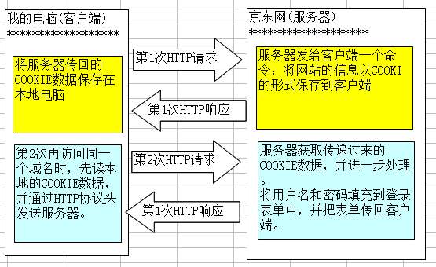

PHP5httpCS-day16（COOKIE,SESSION）
一、COOKIE
COOKIE记录用户信息数据(网站自动登录、记录用户爱好、购物车等)。
COOKIE数据是由服务器来生成，并传回到客户端，可以保存在服务器或客户端。
使用COOKIE的特点
实现网站自动登录，可以跟踪用户，并记录用户状态。记录一些用户的爱好，下次访问时：产品推送。
购物车。你曾经浏览过的商品可以记录下来。简单加密不安全，保存数量有限。
COOKIE的工作原理

1、设置COOKIE
- 描述：发送一个COOKIE到客户端。
- 语法：bool setcookie ( string $name [, string $value [, int $expire = 0 [, string $path [, string $domain [, bool $secure = false [, bool $httponly = false ]]]]]] )
例：setcookie("username",'admin',time()+3600,"/",".wdc.com",false,false);
- 参数：$expire，COOKIE的有效期，默认是0，表示关闭浏览器COOKIE就失效了。1即时性 2过期时间time()+N秒3永久过期时间PHP_INT_MAX
- $path，COOKIE的有效路径。
- $domain，COOKIE的有效域名。
- $secure，是否仅能使用https来传送COOKIE。
- $httponly，是否只能通过http协议来使用COOKIE。
COOKIE的名称和值$value类型:只能是字符串、值还可是能直接转换为字符串的(字符串、数字、布尔),不能是其他值。
例setcookie("username",implode(array(1,2,3)));//Cookie
username=123自动转为字符串，可以 读取Cookie：setcookie("lasttime",date('Y-m-d H:i:s',time())); echo "$_COOKIE[lasttime]";//2017-01-16 10:45:20
设置一个过期时间$expire 例：setcookie("username","user",time()+3600);
2、COOKIE有效$path 路径
- 默认是网站根目录“/”。换句话说：在本网站的任何子目录下都可以使用该COOKIE。
- setcookie(‘username’ , ‘admin’ , 0 , ‘/upload/’) //该COOKIE数据只能在upload目录及其子目录下使用
3、COOKIE域名$domain有效性默认值为当前域名，只可以用在当前域名下
- 举例：
- setcookie(‘username’ , ‘admin’ , 0 , ‘/’ , ‘.2016.cn’) //设置主域名、一级域名，可以在任何子域名下使用---------------------------------
- setcookie(‘username’ , ‘admin’ , 0 , ‘/’ , ‘www.2016.cn’) //二级域名，只能在当前域名下使用
- setcookie(‘username’ , ‘admin’ , 0 , ‘/’ , ‘image.2016.cn’) //二级域名，只能在当前域名下使用
- setcookie(‘username’ , ‘admin’ , 0 , ‘/’ , ‘photo.image.2016.cn’) //三级域名，只能当前本域名下使用
4、是否仅限https可以发送COOKIE，默认FALSE，如http也可
5、是否只能通过http协议使用COOKIE默认FALSE，其他程序也可使用cookie，如JS
6、删除COOKIE（5方法）
1、设置有效时间为过去的时间setcookie("username","user",time()-1);
2、将COOKIE值设置为FALSE：setcookie("username",false);
3、空字符串setcookie("username",'');
4、或不设置COOKIE值setcookie("username");
5、清除浏览器缓存
例：setcookie("username",'admin',time()-1,"/",".wdc.com",false,false);//最好指定路径文件夹
二、SESSION
1、什么是SESSION？
COOKIE将会话数据保存在客户端，而SESSION是将会话数据存在服务器，相对安全 ；
session是另一种记录客户状态的机制。
特点：session是基于cookie的，SESSION保存的数据量很大；
COOKIE保存的数据类型只能是字符串，而SESSION可以存储所有数据类型，除资源外；
session在第一次建立的时候，会为用户生成一个独一无二的sessionid，并保存在cookie中；
服务器就是通过存储在cookie中的sessionid来识别来访用户的！
2、SESSION工作原理

3、开启SESSION会话功能
描述：开启一个新的SESSION会话，或者重用一个SESSION会话。语法：bool session_start ( void )
说明：开启SESSION，就是创建一个SESSION的ID。该ID是唯一的，永不重复，是一个随机的值。
注意：一个页面只能开启一次，不能开启第2次。同一个网站，对于某个用户来说，只有一个SESSION的ID。
4、添加SESSION数据
- 语法：$_SESSION[ name ] = value;例：$_SESSION['user'][]=array('a','b','c');
- SESSION的名称，可以是字符下标，也可以是整型下标。其值为除资源外类型数据。
5、读取SESSION数据（注意：设置要在开启之前）
1、获取/设置当前的SESSION－ID值，语法：string session_id ([ string $id ] )
2、获取当前SESSION的COOKIE数据名称，语法：string session_name ([ string $name ] )
例、print_r(session_id());// nmro8te07991t5bf419ku294j6
6、删除SESSION数据
使用unset()来删除单个SESSION数据； unset($_SESSION['username']);
1.1删除全部session_unset();id文件还在，成为垃圾 1.2session_destroy();数据内存中还在，但sessionid文件删除。
注意：删除session时，两步必须都有，缺一不可。
可以将一个空的数组，赋给$_SESSION变量。 $_SESSION=array();
7、销毁当前SESSION文件语法：bool session_destroy ( void )
8、SESSION在服务器的存储位置
保存在服务器的C盘下：C:\WINDOWS\TEMP，SESSION文件名的格式：sess_sessID
9、SESSION设置：修改php.ini文件
1、修改SESSION保存位置(session.save_path)
2、修改SESSION名称(session.name)
3、使用函数修改SESSION的COOKIE的相关参数(session_set_cookie_params())
针对当前用户的配置称为“脚本级配置”“局部配置”。
语法：void session_set_cookie_params ( int $lifetime [, string $path [, string $domain [, bool $secure = false [, bool $httponly = false ]]]] )
参数：$lifetime，过期时间，以秒为单位，直接写秒，注意：该函数必须在SESSION_START()之前设置
10、SESSION的垃圾回收garbage collection（已默认设置）
SESSION垃圾回收时间(session.gc_maxlifetime)maxlifetime：最大存活时间
在php.ini中session.gc_maxlifetime = 1440//默认24分钟，同时回收概率session.gc_divisor 太大该过期时间也不生效
回收的概率(session.gc_probability、session.gc_divisor)
session.gc_probability = 1（分子默认1），session.gc_divisor = 1000（分母默认1000）
默认的比率是：1/1000，每1000个用户访问时，会完整的进行一次清理。
11、session补充
COOKIE删除后SESSION是否不再可用
1. 设置php.ini配置文件的“session.use_trans_sid = 1”，或编译时打开了“--enable-trans-sid”选项，让PHP自动跨页传递Session ID。
2. 手动通过URL传值、隐藏表单传递Session ID。
3. 用文件、数据库等形式保存Session ID，在跨页过程中手动调用。
session是基于cookie的，但是如果禁用cookie，只要用其他方式传递sessionid，session同样可以使用！
例如：使用url的get方式传递sessionid。
如果需要使用get方式传递sessionid，修改php.ini配置：
第一步：session.use_cookies = 0
第二步：session.use_only_cookies = 0
第三步：session.use_trans_sid = 1
实例：1第二次登录显示上次登录时间2设置session
if ($_COOKIE) { echo "欢迎再次光临，上次登录时间"."$_COOKIE[lasttime]"; }
else { echo "欢迎光临"; }
setcookie("lasttime",date('Y-m-d H:i:s',time()),time()+300);
session_start();
$_SESSION['username1']='admin';
print_r($_SESSION);